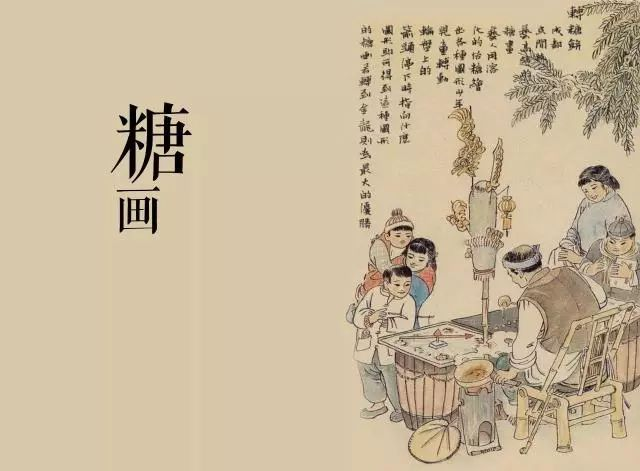

糖画艺术源远流长，其历史可以追溯到明代。据史料记载，糖画最初起源于四川地区，后逐渐流传至全国各地，并与各地民俗文化相融合，形成了各具特色的地方风格。

明代糖画艺人作品复原图
1 起源时期（明代）
明代是中国糖画艺术的萌芽期。当时，四川地区的民间艺人开始尝试用熔化的糖液在石板上作画，创造出最初的糖画形式。这一时期的糖画题材较为简单，主要是吉祥图案和动物形象。
2 发展时期（清代）
清代是糖画艺术的重要发展期。随着制糖技术的进步和糖的普及，糖画艺术得到了迅速发展：
- ■ 题材更加丰富，出现了人物、故事等复杂造型
- ■ 技艺更加成熟，形成了系统的制作方法
- ■ 应用场景扩大，成为庙会、集市的重要民俗活动
3 繁荣时期（民国）
民国时期，糖画艺术达到了鼎盛：
北方糖画
- ■ 以北京为中心
- ■ 风格粗犷大气
- ■ 题材多为历史人物、神话传说
南方糖画
- ■ 以成都为代表
- ■ 风格细腻精致
- ■ 题材多为花鸟鱼虫、吉祥图案
4 现代发展
新中国成立后，糖画艺术经历了起伏：
- 50 - 60年代：糖画艺术得到保护和传承
- 文革时期：糖画艺术一度衰落
- 改革开放后：糖画艺术重新焕发生机
- 21世纪：列入非物质文化遗产名录
1368-1644
明代起源
糖画艺术在四川地区萌芽
1644-1911
清代发展
糖画技艺成熟，题材丰富
1912-1949
民国繁荣
形成南北不同风格
2008
非遗保护
列入国家级非物质文化遗产名录
5 糖画与民俗文化
糖画艺术深深植根于中国传统民俗文化中：
- ■ 庙会文化：糖画是传统庙会的重要元素
- ■ 节庆文化：春节期间糖画尤为盛行
- ■ 吉祥文化：糖画题材多寓意吉祥
- ■ 市井文化：反映了民间审美和生活方式
"
糖画是流动在石板上的甜蜜记忆，承载着几代中国人的童年情怀。
"